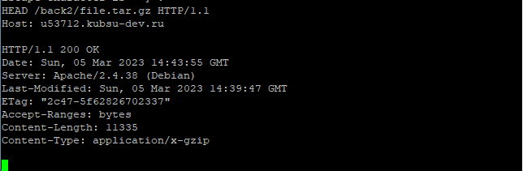

Залили файлы в каталоге files на веб-сервер через GIT. Проверили загрузку файлов в браузере из нашего учебного домена. Проверили работоспособность index.php.
1.Получили главную страницу методом GET в протоколе HTTP 1.0;

2.Получили внутреннюю страницу методом GET в протоколе HTTP 1.1;

3.Определили размер файла file.tar.gz, не скачивая его;
4.Определили медиатип ресурса /image.png;

5.Отправили комментарий на сервер по адресу /index.php;
6.Получить первые 100 байт файла /file.tar.gz;

7.Определили кодировку ресурса /index.php.